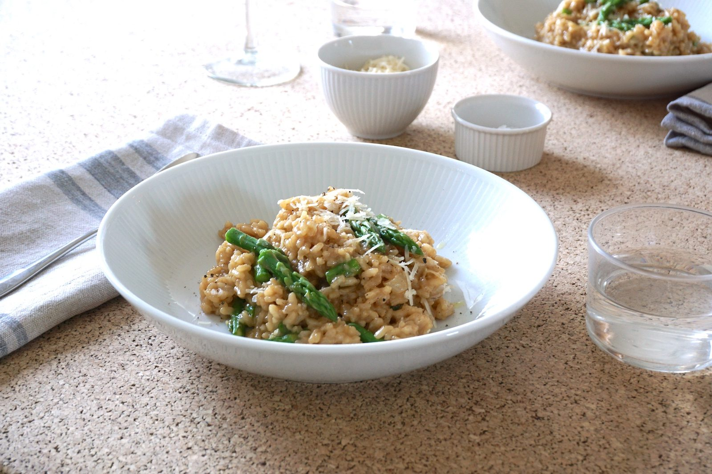

Asparagus Risotto

Ingredients
Method
- Bring a large saucepan of water to a boil. Blanch the 12 asparagus spears by placing them in the boiling water for 1-2 minutes until bright green (1 minute for a crunchier texture). Immediately transfer the stalks to a bowl of ice water to stop the cooking. Once cool, chop off the top third of the stalks and set them aside.
- To the same saucepan, add the remaining ends of the asparagus to the 1.25L chicken stock and simmer for 20 minutes to infuse the flavour. Discard the ends and keep the stock warm.
- Heat the 1 tbsp olive oil in a sauté pan or cocotte. Add the 1 medium onion and fry over low heat for 4-5 minutes, stirring continuously, until translucent. Add the 1 garlic clove and fry for another minute. Season with a generous pinch of sea salt.
- Add the 500g Carnaroli risotto rice and cook, stirring, for 2 minutes until the grains are glossy and fully covered in the oil. Add more oil if needed.
- Increase the temperature to medium and add the 250ml white wine. Once the wine is absorbed, add a ladle of chicken stock. Continue to stir and simmer gently until the liquid has been absorbed. Repeat this process, adding a ladle of stock at a time, until the rice is tender (about 15 minutes).
- Finally, stir in the reserved asparagus tops and the 150-175g Parmesan. Add the Parmesan in batches until the desired consistency is reached. Season to taste with sea salt and cracked pepper, then stir through the 50g butter. Serve immediately.
Source: https://www.boroughkitchen.com/blogs/news/justins-english-asparagus-risotto